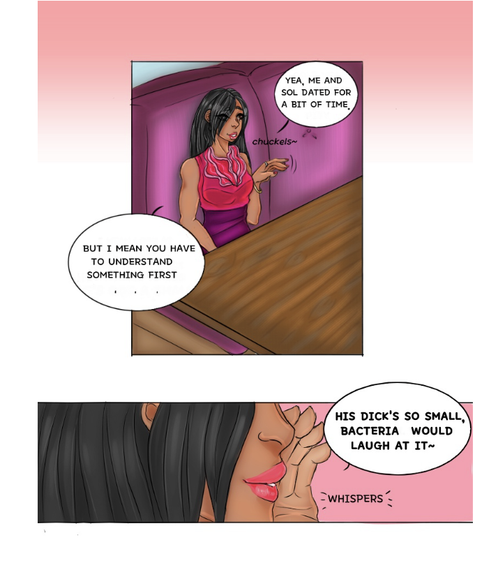
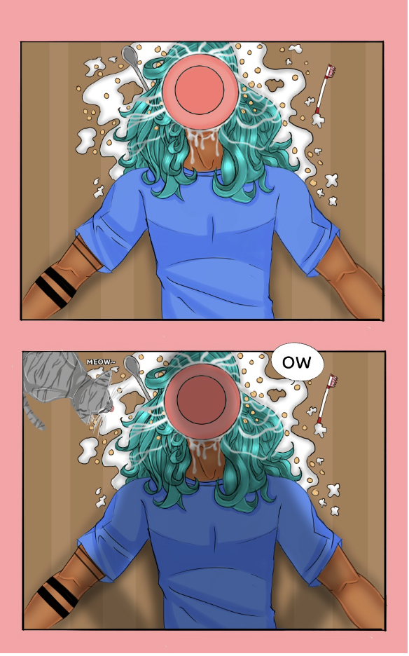
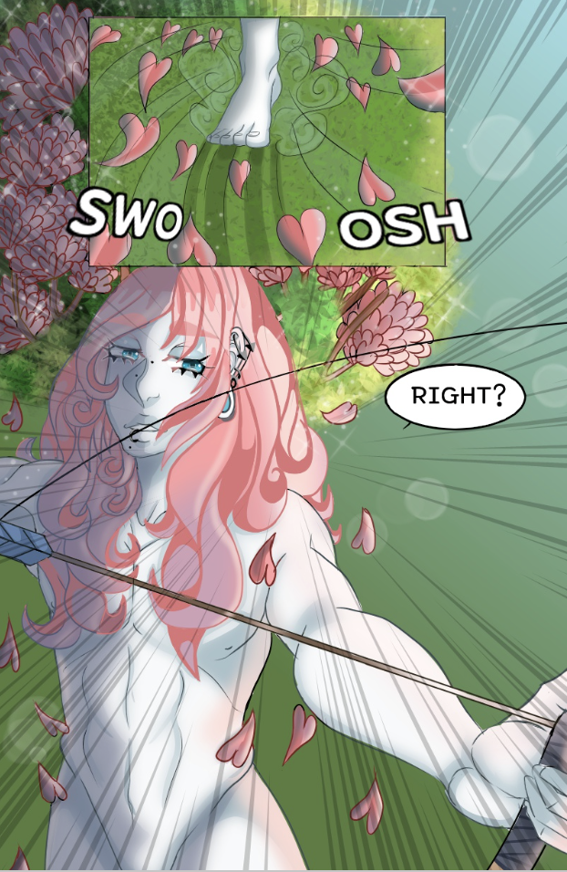
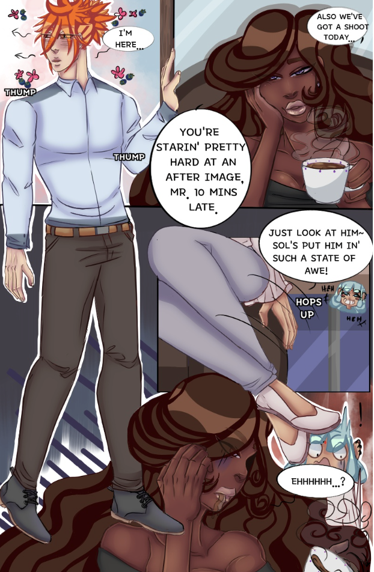
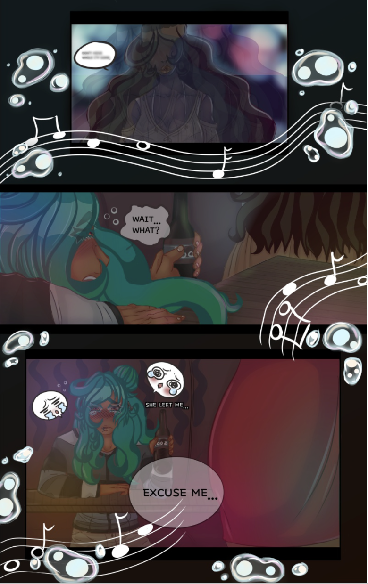
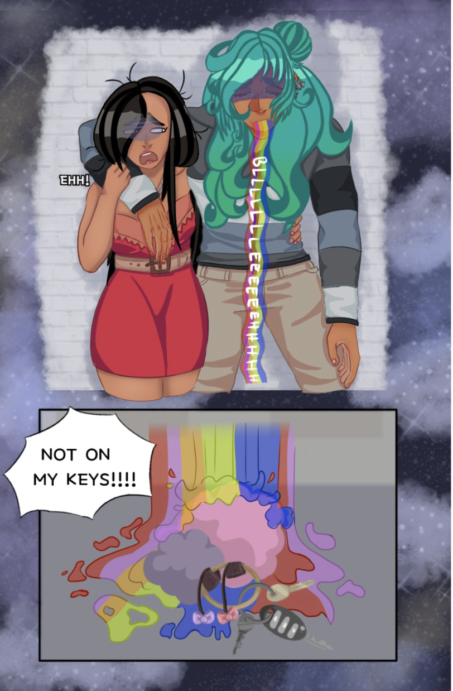
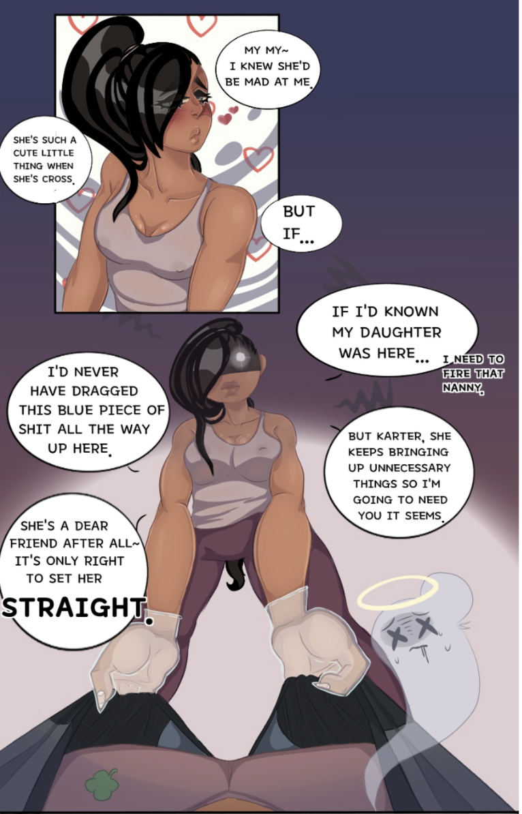

I could start this journey out with something like, “I’m a creative, and I’ve always loved to draw.” But I don’t want to start that way. Instead, I’d like to tell you I didn’t choose to be a creator — it chose me.
My first memory of ever doing something artistic was somewhere around primary school, when I’d gotten my hands on a paintbrush and watercolors. I should have known then I was in for a fucking ride; that little kid muttered to herself, “I’m never doing art again.”
I truly thought that was the end of it, and maybe it could’ve been — if not for my mom. I was a picky child, and running out of shows to hold my attention, my mom found a little something called anime. Truthfully, I had already been watching anime like Dragon Ball Z, Shaman King, and Inuyasha, but I hadn’t known they were anime. If you ask me, my first true anime was Ranma ½ — my first true love. I was engrossed.
I didn’t just watch the anime either. No, I was one of those freaks that wanted to read manga and watch the anime. I was special, and Ranma was my everything. This was my true downfall! It didn’t just give me the urge to draw — it made me want to create stories.
That’s what I did. I struggled and cried my way through learning hell. Of course, you’re never truly done learning, and I would never call myself a master, but I found myself enjoying the creations.
Around college, I started to post my first Webtoon called Yea It’s a Bit Small (which is no longer up). While not my first comic, it was the series that allowed me to start. I didn’t stop there either — I made several comics. If you’re interested in my longest/oldest comic, I’d suggest checking out Sumi In Love. You can even watch an updated episode I did on YouTube below.
Snapshots from my early comic days — where every panel was a lesson.







I took a long break from creating stories due to stress… and when that stress never left, I realized giving up on my love for creating stories was not the answer. I decided to create for myself again. I wasn’t drawing comics, just writing out my stories like I did as a kid — following my mom around stores, eyes glued to my iPod as I typed my little heart out.
What I’m doing now is remembering what led me to start and quit. I’m in the process of reclaiming what was always mine: the love of creating. With that being said, I’ve realized a few important things about myself — I don’t like trying to “end” stories. I am a starter at heart. I thought the thing I was good at — the start — might be what others are struggling with.
So I decided to build story starters that could help other creatives. That means I’m slowly working on narrative blueprints and kits. I’m a little slow because I love to jump around on projects, but as they grow, you’ll be able to find all the information about them here on my site.
Check out my shop for all the current starters.
If you’re hoping for something more custom, check my services.
You’ve made it to the end~! The people I’m most excited to help are other storytellers. I understand the stress of what it means to start — and now I know I can help people who are looking to begin with something more fleshed out. It doesn’t matter if you write novels, make games, or create comics — my starters are versatile!
That being said, I’m a creative who takes her time with her work. I can’t rush through as others may be able to. So this is also an opportunity to adopt a witch! I’m open to creative sugar parents who wish to allow a little dabbler witch to focus on her craft instead of playing the “starving artist” game.
So if you’re feeling like you’ve got sugar parent energy in you, hop over to my Ko-fi! Monthly donations can support a creative like myself — and help me not fall over in a heap of exhaustion.
Either way, welcome to the coven.